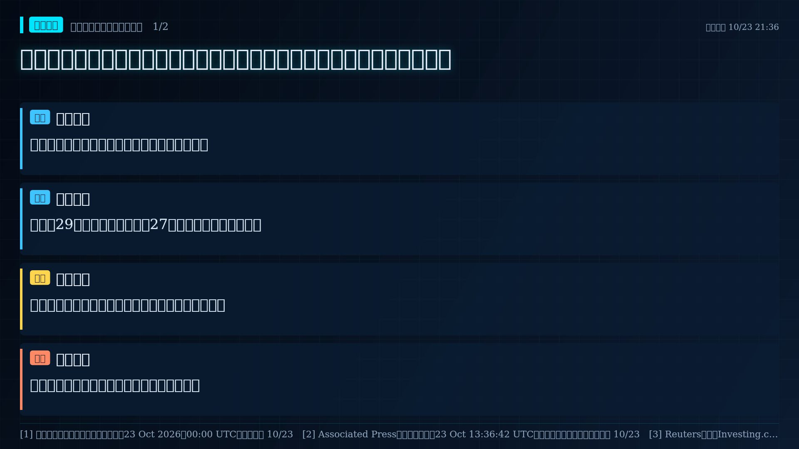
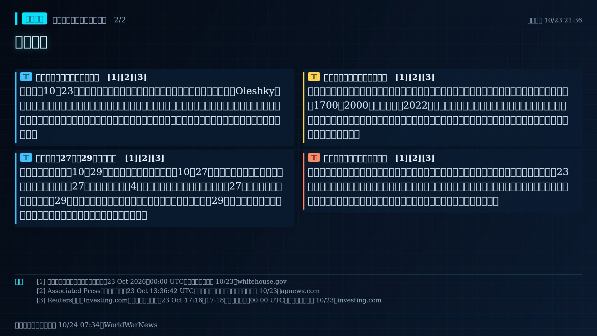

俄烏同意奧萊什基局部人道停火；白宮與雙方官員所述開始日期相差兩天


報導新進展｜俄占城鎮的人道任務
美國白宮10月23日宣布，俄羅斯與烏克蘭同意在赫爾松州俄軍占領的奧萊什基（Oleshky）局部停火，讓人道物資進入並安排平民撤離。美聯社直接採訪烏方談判代表、人權監察員盧比涅茨；報導亦引述俄軍總參謀長與俄方人權官員確認安排。這是預定的局部人道措施，尚不是已生效停火或全線停戰。
報導日期差異｜27日或29日須再核對
白宮官方文字寫停火10月29日開始；盧比涅茨向美聯社稱10月27日星期二開始、任務兩日後展開。俄軍總參謀長稱27日莫斯科時間凌晨4時在赫爾松方向停火；路透報導也採27日。公開說法可與先期排雷、29日啟動物資與撤離的分階段安排相容，但白宮原文直接把29日稱作『停火開始』，因此不能代替當事方確認或自行消除這兩天差異。
研判影響｜先看安全通道能否落地
奧萊什基隔第聶伯河與烏方控制的赫爾松市相望，長期面臨食物、醫藥、用水與地雷障礙。白宮估城內約1700至2000人，但承認自2022年無正式人口清查。局部停火能否改善平民處境，取決於排雷、車隊安全、物資抵達與自願撤離是否真的發生；協議本身不代表戰線移動，也不足以推論更廣泛和平談判會成功。
待證查核界線｜尚未驗證執行結果
目前無公開協議全文或獨立停火監督紀錄；撤離者目的地與確切適用範圍仍待確認。本稿核對的是23日公開聲明與採訪，並未把預計日期寫成已實現的救援。沒有符合本事件位置、拍攝時間、產品編號與可判讀品質的衛星影像，故不以舊影像推算通道、部隊位置或地面控制線。